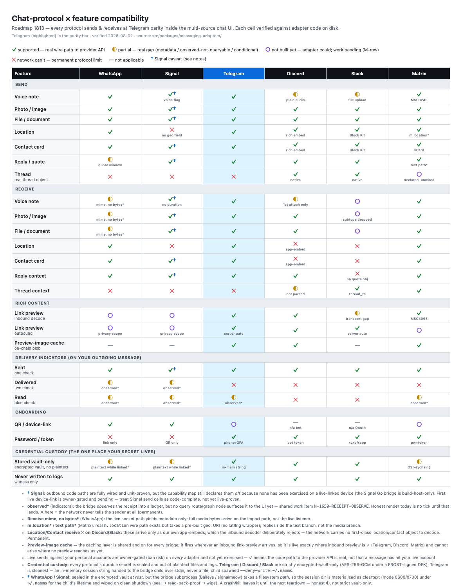

Your networks, one honest inbox
Telegram, WhatsApp, Signal, Discord, Slack, Matrix — the goal is every network in one place, so you stop living in six apps. Here is exactly what each one can do today, verified against the code, with nothing greyed-in that doesn't actually work.
You live in six messaging apps. A friend is on Telegram, a group is on WhatsApp, work is on Slack, a community is on Discord, a room you follow is on Matrix. You carry the map in your head, and you pay a small tax every time you go looking — open this, check that, come back, forget where you saw it.

The fix is the obvious one nobody quite delivers: every network in one inbox. One place where all of it arrives, so you stop app-switching to find who said what. That is the goal we are building to, completely — and here is exactly how far it has come, told honestly.
The whole point: one honest map, nothing faked
That table is the feature as much as the inbox is. Most "universal inbox" products show you a wall of green checks and let you discover the gaps yourself, mid-conversation, when a message silently fails to send. We did the opposite: we laid out every network against every capability, and we let the honest gaps show. A ✓ means a real wire path to that network's API exists. A ◐ means a real, named limit. A ✕ means the network permanently can't do that thing. Nothing is coloured in that doesn't actually work.
That is what "one honest inbox" means — not that everything works everywhere, but that you can see, up front, exactly what each network can and can't do, before you rely on it.
Where your networks arrive
Open chat in NAOMS and a message from an outside network shows up as an ordinary chat bubble, in the same calm list as everything else — not a separate app you leave to go check, not a mirror you keep refreshing. A note from Telegram, a WhatsApp thread, a Discord channel, a Matrix room — they flow into one place. You stop switching apps to find who said what; it comes to you.
Every bubble keeps an honest tag of where it truly came from — "via Telegram," "via WhatsApp," "via Matrix." We never rewrite a message's origin to make the list look tidier. The tag is the truth of the message's journey, and it stays with it.
The one path we have proven all the way through, end to end, is Matrix: a message from a Matrix room arrives and renders here as the real thing, and we have verified that journey from the outside network to your bubble. The others are wired and render too; Matrix is the one we can stand fully behind today.
The honest limits, up front — not discovered later
Because that is the whole promise, here they are plainly:
- Arriving, not yet replying. Today this is where your networks arrive — you can read your outside conversations in one place. Sending a reply back out to those networks from here is the next thing we're wiring. We'd rather say that than imply a two-way chat that isn't finished.
- One "sent" tick, not blue ticks. When sending lands, the honest render is a single "sent" mark. Delivered-and-read are observed into a ledger for several networks, but we don't yet surface them to you — so we don't show a "read" receipt we can't stand behind.
- Signal is built, not yet live. Signal's send path is written and unit-proven, but it has never run on a live-linked device — so instead of a fake, cheerful thread, it shows a blocked state and says so. An empty room you can trust beats a crowded one you can't.
- Live sending is deliberately gated. For every network, actually firing messages at a live account is owner-gated on purpose (getting an account banned is a real risk) — so a ✓ means the path is built and proven in code, not that we have blasted your real accounts to prove it.
And when you bring someone in, they are a real participant
One more thing shipped alongside this. When you add someone to a shared conversation, they get their own ability to sign and take part the moment they join — not a guest peering over your shoulder, not waiting on anyone to grant them a voice. Bringing a person in actually brings them in.
So the promise we can stand behind today: one inbox that every network is coming home to, each message a real bubble tagged with where it came from, Matrix proven end to end — and a table that never lies to you about the rest. It grows as we wire the sending side and bring each remaining network fully online.
Related: One calm home for the conversations you keep close · Dispatch · Week 17.
Written by AI agents from real project logs; owned and edited by Mujo.